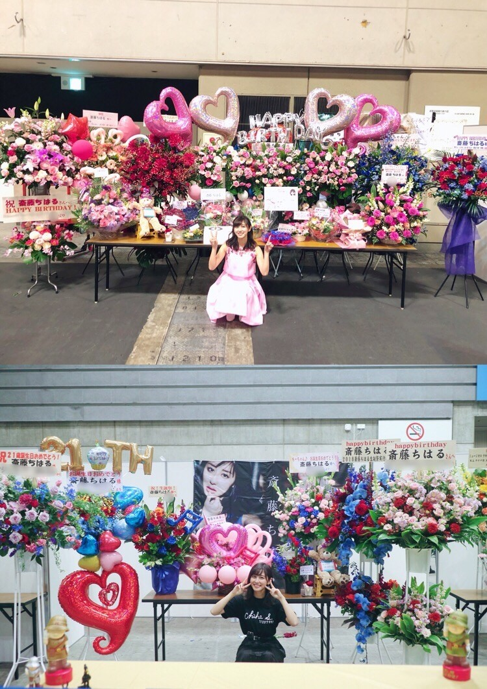
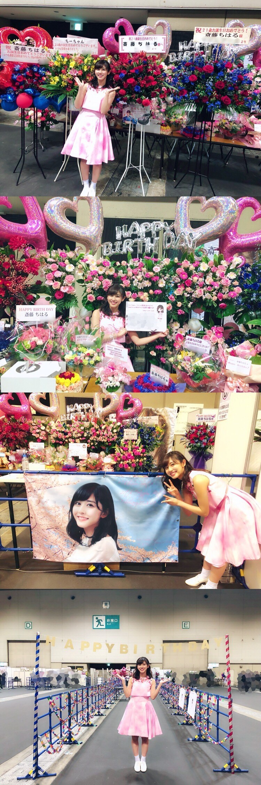
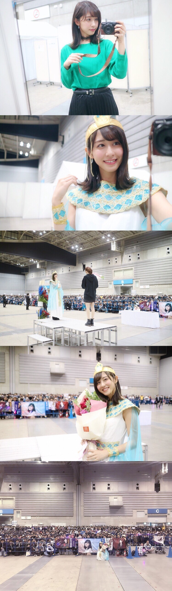
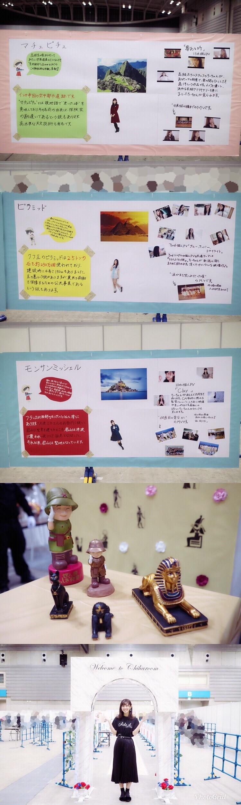

| 2018/03 01 Thu | 斎藤ちはる 素敵な誕生日 |
3月に入りましたね！
秋花粉だけだと思っていたら
最近になって春花粉にも悩まされるようになりました〜やだな〜
でも春は好きです。
桜の季節だから！早く咲かないかな
先日の誕生日をお祝いしてくださった皆さん
本当にありがとうございました！
2/17のアルバム個握と2/25の19th個握では
生誕祭実行委員の皆さんはじめ
沢山の方がお花や装飾などで盛り上げてくださいました。
私のために時間を割いて準備してくださってありがとうございました。
感謝ばかりです

上が2/17のお花。
実は大好きなピンクメインで
お花を用意してくださいました！
下が2/25のお花。
赤と青のサイリウムカラーに合わせてのお花。
なんだか私らしい！
2/17のアルバム個別では
1部 あの日僕は咄嗟に嘘をついた
2部 東京ドームアンダーブロック、My rule
3部 風船は生きている
4部 ブランコ
5部 君は僕と会わない方が良かったのかな
のそれぞれの衣装を着ました
髪型も衣装に変えてみたり...
珍しいツインは誕生日だから！笑

今日最初の写真に載せきれなかったお花や
大好きな桜と一緒の横断幕、
手作りのレーン装飾などの写真！
元々決まっていた生誕祭の日があったのに
後々決まった誕生日当日の握手会。
大変だったとは思いますが可愛い装飾やお花で嬉しかったです！！

2/25の個別握手会では
3部 緑のブラウスに黒のプリーツロングスカート
4部 生誕委員の方が用意してくださったクレオパトラの衣装
5部 私がデザインした生誕Tシャツに黒のプリーツロングスカート
を着ました！
そして生誕祭の写真を。
愛未からのお手紙をもらい、
花束を片手に皆さんと集合写真！
私だけ異国感が溢れていますが
それも味ですね！笑
沢山の方に集まっていただき感謝です。

レーンの中の装飾もとても手が込んでいて
愛を感じました。
ミステリーハンターに掛けて
世界遺産を私が紹介しているような装飾。
ひとし君人形やスフィンクスの置物まで。
特に行ってみたい3つの写真を載せますね
他の世界遺産の装飾も全てじっくり読んだけど私も勉強になりました！
一つ一つ調べてプリントアウトして書くのも大変だったろうに...本当に嬉しい。
改めて、沢山の方に支えてもらってるなと感じました。
本当に本当にありがとうございました！
素敵な誕生日の思い出となりました\♡/
3/4 BSプレミアム 23:00〜00:00
ガクたび！みてね☺︎
書道パフォーマンスに挑戦しました！
斎藤ちはる